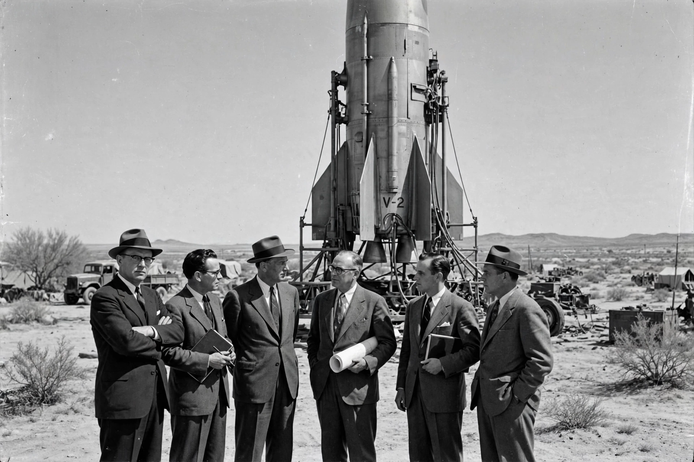

Operation Paperclip
From Wikipedia, the free encyclopedia
| Operation Paperclip | |
|---|---|
| Country | United States |
| Period | 1945–1959 |
| Personnel | ~1,600 German scientists and engineers |
| Key figure | Wernher von Braun |

The von Braun team in America, 1946.Operation Paperclip was a secret United States intelligence programme that brought more than 1,600 German scientists, engineers and technicians — many of them former Nazi Party members, some implicated in war crimes — to the US after the Second World War to work on American military and space programmes, denying their expertise to the Soviet Union.
Its most famous recruits were the V-2 rocket team of Wernher von Braun, transferred first to Fort Bliss, Texas and then to Huntsville, Alabama, where they developed the Redstone and Saturn rockets and effectively founded the American space programme's engineering core at what became the Marshall Space Flight Center.
Controversy
The programme's name came from the paperclips used to attach new, sanitised dossiers to the scientists' files. Historians continue to debate the extent to which records were whitewashed — including von Braun's SS membership and the V-2's slave-labour production at Mittelwerk — and whether the ends (Cold War advantage, Apollo) justified the means. The episode remains the central case study in the ethics of wartime science.
See also
V-2 rocket · Wernher von Braun · Marshall Space Flight Center · Space Race